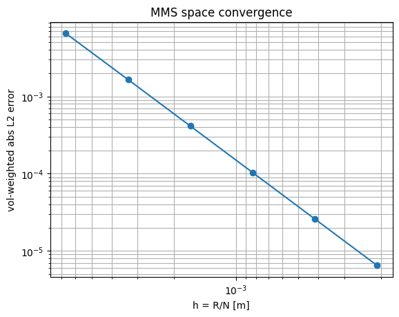
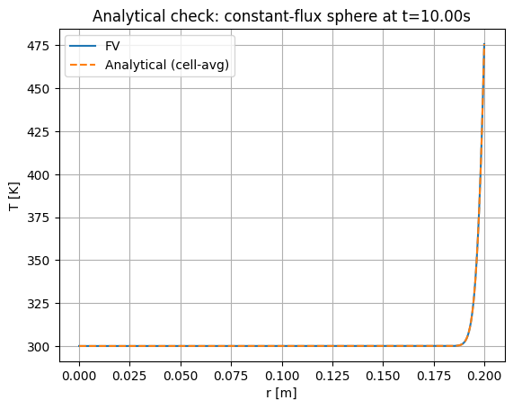

07 / Computational heat transfer / Completed team study
AE370 · Five-person team project
Modeling reentry heat-shield conduction and material tradeoffs
I checked and documented the numerical evidence for a team-developed model coupling reentry heating to conduction through a layered spherical heat shield. My work connected the finite-volume and Crank–Nicolson implementation to manufactured-solution convergence, a homogeneous-sphere analytical benchmark, plots, and report explanations.
- My contribution
- Verification and implementation writing, consistency checks, result interpretation, plotting, and report editing
- Tools
- Finite volumes · Crank–Nicolson · Manufactured solutions · Verification
- Outcome
- Near-second-order convergence in space and time

Connect trajectory, heating, and conduction
The team coupled a reduced-order reentry trajectory and Sutton–Graves surface heating to radially symmetric conduction through a layered spherical thermal-protection system.
Conservative finite volumes on spherical shells, harmonic interface conductivity, Crank–Nicolson time integration, and a tridiagonal solver formed the conduction model. The trajectory used a point-mass model and RK4 integration.
Check the numerical method
Observed spatial orders: 1.987–1.999. Observed temporal orders: 1.932–1.995.
Manufactured solutions measured convergence against a known temperature field. A separate constant-flux homogeneous-sphere benchmark compared finite-volume cell averages with cell-averaged analytical values.
For the reported analytical test at 960 radial cells and a 0.01 s time step, the maximum discrepancy was 0.0161 K. This measures agreement in a specific numerical benchmark; it does not establish that reentry temperature predictions are physically accurate to that tolerance.
{kind=link}

My contribution
I wrote portions of the implementation and numerical-reliability sections, checked methods and derivations against the code and course material, helped interpret verification results and resolve inconsistencies, and contributed to plotting, report structure, and editing.
The report credits Danfeng Ye with implementing the conduction solver, verification suite, parameter sweeps, and run scripts. My contribution focused on checking and communicating the technical evidence.
What the material study concluded
The report identifies a tradeoff between surface and internal protection: reducing conductivity improves insulation at the back face while increasing surface temperature; increasing conductivity carries heat inward faster. Increasing volumetric heat capacity lowers temperature peaks and generally delays back-face heating.
The study prioritizes back-face response because the steep surface gradient is more sensitive to the numerical grid. These are conclusions from an idealized model with prescribed heating, constant material properties, and no ablation or radiative cooling. The verification tests establish numerical behavior, rather than flight qualification or a material-selection decision.